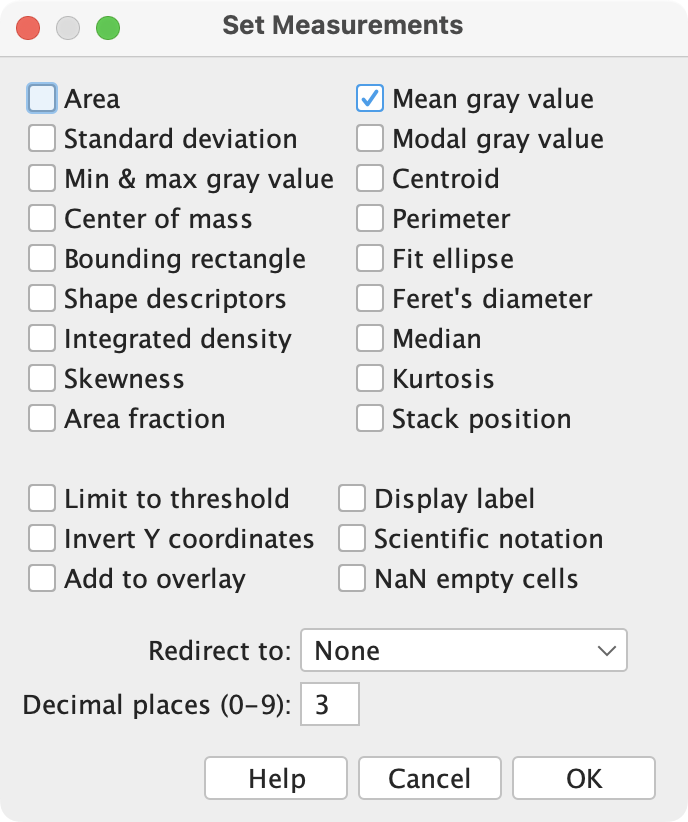

All in One View
Content from Introduction to Bioimage Analysis and Fiji
Last updated on 2026-09-08 | Edit this page
Overview
Questions
- What is bioimage analysis?
- Why do researchers use bioimage-analysis workflows?
- What is Fiji and how is it used in biological research?
- What makes an image-analysis workflow reproducible?
Objectives
- Describe the role of bioimage analysis in biological research.
- Explain why images should be treated as scientific data.
- Identify the major steps in a bioimage-analysis workflow.
- Navigate the Fiji user interface.
- Explain the importance of reproducibility in image analysis.
Introduction
Modern biological research generates vast quantities of image data.
Microscopy facilities can produce hundreds, thousands, or even millions of images during a single experiment.
As datasets grow larger, manual analysis becomes increasingly difficult, time-consuming, and prone to bias.
Bioimage analysis provides a framework for extracting quantitative information from image data in a reproducible and scalable manner.
Throughout this lesson, we will use Fiji to develop image-analysis workflows that transform images into quantitative biological measurements.
What Is Fiji?
Fiji (“Fiji Is Just ImageJ”) is a free, open-source image-analysis platform widely used in the life sciences.
It combines:
- ImageJ
- a large collection of community-developed plugins
- tools for image visualisation
- tools for measurement and quantification
- tools for automation and batch processing
Fiji has become one of the most commonly used image-analysis platforms in biological research because it is:
- free
- flexible
- extensible
- reproducible
Throughout this lesson we will use graphical tools within Fiji to build a complete image-analysis workflow.
Starting Fiji
Launch Fiji on your computer.
After Fiji opens, you should see the Fiji toolbar.

The toolbar provides access to:
- selection tools
- drawing tools
- measurement tools
- image navigation tools
- the menu bar (in Windows/Linux)
- the search box
- information about the current image
Spend a few moments exploring the interface.
Do not worry about understanding every tool yet.
We will introduce them as they become relevant.
Challenge
Open Fiji and identify three tools on the toolbar that you have not used before.
What do you think they might be used for?
Answers will vary.
The purpose of this exercise is to encourage learners to explore the interface and become comfortable locating tools.
Images Are Data
Many researchers initially think of images as pictures.
However, for image analysis, images are better thought of as data.
Consider the following questions:
- How many cells are present in an image?
- What is the average area of each nucleus?
- How much fluorescence is present within each cell?
- Does a treatment affect cell morphology?
- How does protein localisation change over time?
All of these questions can be answered using information contained within image pixels.
Images are therefore measurements.
Our goal in bioimage analysis is to extract meaningful biological information from these measurements.
The Bioimage Analysis Workflow
Although image-analysis workflows vary between experiments, most follow a similar structure.
Acquire Images
↓
Exploratory Data Analysis
↓
Preprocess Images
↓
Segment Objects
↓
Measure Features
↓
Analyse ResultsThis lesson will follow exactly this workflow.
Each episode introduces one stage of the analysis process and explains why that step is necessary.
Challenge
Consider a microscopy experiment from your own research.
What measurements could potentially be extracted from the resulting images?
Examples might include:
- object counts
- object size
- object shape
- fluorescence intensity
- distances between objects
There is no single correct answer.
Any property that can be quantified from image pixels may potentially be measured and used to answer a biological question.
Why Not Analyse Images Manually?
Humans are remarkably good at recognising biological structures.
However, manual analysis does not scale well.
Imagine an experiment containing:
- 500 images
- 1,000 cells per image
A researcher would need to inspect approximately:
500,000 cellsEven simple measurements become impractical at this scale.
Manual analysis is often:
- slow
- difficult to reproduce
- prone to subjective interpretation
- vulnerable to human error
Automated image analysis allows measurements to be performed consistently and efficiently.
Reproducibility
Suppose two researchers independently analyse the same image.
Will they obtain exactly the same result?
Perhaps not.
People make subjective decisions regarding:
- object boundaries
- image quality
- weak signals
- overlapping structures
Image-analysis workflows help reduce this variability.
Rather than relying on undocumented decisions, we can record exactly how an analysis was performed.
This allows analyses to be:
- repeated
- inspected
- validated
- shared with collaborators
A First Look At Automation
One of Fiji’s strengths is the ability to automate repetitive analyses.
Later in this lesson we will learn how to:
- record analysis steps
- create simple macros
- process batches of images
- generate reproducible results
Automation allows the same workflow to be applied consistently across entire datasets.
Challenge
Which of the following tasks would benefit from automated image analysis?
- Measuring fluorescence intensity in 10,000 cells
- Counting bacteria in 500 images
- Measuring organoid size in a screening experiment
The correct answer is:
All of the aboveAs image datasets increase in size, automated analysis becomes increasingly important.
Looking Ahead
The next episode introduces digital images and image metadata.
We will explore how images are represented inside a computer and why concepts such as pixels, dimensions, bit depth, and calibration are essential for quantitative image analysis.
Key Points
- Bioimage analysis converts images into quantitative measurements.
- Fiji is a widely used platform for biological image analysis.
- Images should be treated as scientific data rather than pictures.
- Most image-analysis workflows consist of inspection, preprocessing, segmentation, and measurement.
- Automated analysis improves scalability and reproducibility.
- Reproducible workflows are more valuable than undocumented manual measurements.
Content from Images, Pixels and Metadata
Last updated on 2026-09-08 | Edit this page
Overview
Questions
- How are digital images represented inside a computer?
- What information is stored alongside an image?
- Why is image metadata important?
- Why does image calibration matter for quantitative measurements?
Objectives
- Describe an image as a collection of pixels.
- Identify common image dimensions and image types.
- Inspect image metadata in Fiji.
- Explain the importance of spatial calibration.
- Distinguish between pixel measurements and real-world measurements.
Introduction
Before we can analyse biological images, we must understand what an image actually is.
Although images appear to us as visual representations of biological samples, computers do not “see” cells, nuclei, bacteria, or tissues.
Instead, computers store images as collections of numerical values.
In this episode we will explore how images are represented and how Fiji can be used to inspect image information and metadata.
Opening an Image
Start Fiji and open one of the built-in sample images.
Select: File → Open Samples → HeLa Cells

The image should appear in a new image window.
Take a moment to inspect the image.
What biological structures can you identify?
Although we immediately recognise cells and nuclei, the computer only sees a collection of numbers arranged in a grid.
Images Are Made Of Pixels
Digital images consist of small elements called pixels.
Pixel is short for: Picture Element
Each pixel stores a numerical value.
For grayscale images:
- low values appear dark
- high values appear bright
Together, large numbers of pixels create the images we recognise.
Zoom into the image using: View → Zoom → In
or the magnifying glass tool. (or use the + and
- keys.)
At high magnification the individual pixels become visible.
Challenge
Zoom into the image until individual pixels can be seen.
What shape are the pixels?
Pixels are arranged in a grid and appear as square elements.
But - pixels are not little squares.
Each pixel is a dimensionless sample stored as a numerical intensity value.
Image Dimensions
Biological images frequently contain more information than a simple two-dimensional picture.
An image may include:
- Width (X)
- Height (Y)
- Channels (C)
- Depth (Z)
- Time (T)
- Well number
Modern microscopy experiments often generate multidimensional datasets.
Exploring Image Properties
With the sample image open, select:
Image → Properties
A dialog box appears containing information about the image.

This information includes:
- image dimensions
- pixel size
- units
- number of slices
- number of frames
Collectively, this information forms part of the image metadata.
Fiji stores information describing the image alongside the pixel data, if the image has the metadata embedded.
Adding Calibration Information
Not all images contain calibration information.
For example:
- metadata may have been lost during file conversion
- images may have been exported incorrectly
- image files may have been cropped or modified outside Fiji
When calibration information is missing, Fiji reports measurements in pixels.
In some cases, the correct pixel size is known from the microscope settings or acquisition software.
Manually Setting Calibration
Suppose we know that:
1 pixel = 0.325 µmTo add this calibration information:
-
Select:
Image → Properties... -
Enter:
Pixel Width: 0.325 Pixel Height: 0.325 Unit of Length: µm Click OK.
The image is now calibrated.
Subsequent measurements will be reported in micrometres (µm) and square micrometres (µm²) rather than pixels.
Challenge
Open an image and inspect its properties:
Image → Properties...Does the image contain calibration information?
If not, assign a pixel size of:
0.5 µm/pixeland verify that the image dimensions update accordingly.
After entering the pixel size and units, Fiji updates the image properties.
Measurements are now reported using calibrated units rather than pixels.
Calibrating Using a Stage Micrometer
Sometimes the pixel size is unknown, but an image of a stage micrometer is available.
A stage micrometer is a microscope slide containing accurately spaced markings of known length.
To calibrate an image using a stage micrometer:
- Open the stage micrometer image.
- Select the Straight Line tool.
- Draw a line spanning a known distance on the micrometer.
e.g.
100 µmSelect:
Analyze → Set Scale...Fiji will automatically record the measured distance in pixels.
-
Enter:
Known Distance: 100 Unit of Length: µm Click OK.
Fiji will calculate the pixel size and store the calibration information.
The image can now be measured using physical units.
Adding a Scale Bar
Once an image has been calibrated, Fiji can add an accurate scale bar.
To add a scale bar:
Select:
Analyze → Tools → Scale Bar...-
Configure the scale bar settings:
- Width of the scale bar
- Height (thickness)
- Font size
- Colour
- Location within the image
Click OK.
A scale bar will be added to the image.
Scale bars are useful for:
- presentations
- posters
- publications
- communicating image scale to readers
A Word of Caution
Adding a scale bar permanently modifies the displayed image.
For quantitative analysis, it is generally best practice to:
- Perform all measurements on the original image.
- Add scale bars only to copies intended for presentation or publication.
The scale bar is only correct if the image is properly calibrated. Always verify calibration before adding a scale bar.
Discussion
Modern microscope acquisition software typically records calibration information automatically and stores it as image metadata.
However, calibration information can sometimes be lost when images are:
- exported to different file formats
- processed using other software
- cropped or modified
- shared without their accompanying metadata
For this reason, it is good practice to check calibration before beginning any quantitative analysis.
When measurements appear unexpectedly large or small, calibration should be one of the first things to verify.
What Is Metadata?
Metadata is often described as:
Data about data or Data that describes data
For microscopy images, metadata may include:
- pixel size
- microscope settings
- objective lens
- channel names
- acquisition date
- exposure information
- dimensional information
Without metadata, it can be difficult or impossible to interpret image measurements correctly.
Why Calibration Matters
Suppose two nuclei each occupy:
1000 pixelsAre they the same size?
Not necessarily.
The answer depends on the size represented by each pixel.
Measurements reported in pixels are often difficult to interpret biologically, unless comparisons are made.
Calibration allows measurements to be expressed in meaningful units such as:
- micrometres (µm)
- square micrometres (µm²)
- millimetres (mm)
Bit Depth
Pixel values are stored using a specific ranges of values that are computer friendly. These ranges are called the image “bit-depth”. They are dictated by the detector that was used to acquire the image.
Common bit depths include:
| Bit Depth | Possible Values | Type |
|---|---|---|
| 8-bit | 0 to 255 | Positive Integer |
| 16-bit | 0 to 65,535 | Positive Integer |
| 32-bit | Large numerical range | Floating Point (Fractions!) |
Higher bit depths allow finer graduations between intensity measurements. 32-bit floating point data can store non-integer and negative values.
In fluorescence microscopy, 16-bit images are commonly used.
To view image information, select: Image → Show Info

Why Metadata Must Be Preserved
Many image-analysis problems begin when image data are exported incorrectly.
For example:
- calibration may be lost
- channel information may disappear
- bit-depth may be changed
- dimensional information may be removed
When image information is lost, quantitative measurements become unreliable.
Good scientific practice includes preserving both:
- image data
- metadata
throughout an analysis workflow.
Images Are NOT Pictures - they are numerical datasets!
A microscopy image contains two equally important components:
- Pixel data
- Metadata
Removing the metadata is similar to removing labels from measurements in a spreadsheet.
The numbers remain, but their meaning may be lost.
Looking Ahead
Now that we understand how images are represented inside a computer, we can begin making quantitative measurements.
In the next episode we will learn how to:
- create regions of interest (ROIs)
- measure biological structures
- record quantitative measurements using Fiji
Key Points
- Digital images are collections of pixels.
- Each pixel stores a numerical intensity value.
- Biological images may contain multiple dimensions, including channels, z-slices and timepoints.
- Metadata describes how an image was acquired and interpreted.
- Calibration is required to convert pixel measurements into biological units.
- Bit depth influences the range of intensity values that can be recorded.
- Quantitative image analysis depends on preserving both image data and metadata.
Content from Fiji Basics
Last updated on 2026-09-08 | Edit this page
Overview
Questions
- How do I get started with Fiji?
- Where can I find tools to manipulate images?
- How can I quickly locate commands?
- How can I open images in Fiji?
Objectives
- Recognise Fiji’s main window and its constituent components.
- Navigate Fiji’s menu structure.
- Open images using several different methods.
- Use the Fiji search bar to locate commands.
- Identify common tools in the Fiji toolbar.
The Main Window
After starting Fiji, you will see the main Fiji window.

The main window consists of several important components:
- The menu bar
- The toolbar
- The status bar
- The search bar
These components provide access to most of Fiji’s functionality.
The Search Bar
One of the most useful features in Fiji is the search bar.
The search bar allows you to:
- locate commands
- launch tools
- search documentation
- find plugins
The search bar can be activated either by clicking inside it or by using the keyboard shortcut:
Ctrl + L (Windows/Linux)
⌘ + L (macOS)
As you type, Fiji displays matching commands and tools.
Challenge
Use the search bar to find the command:
Brightness/Contrast
Can you identify which menu contains this command?
The command is located under:
Image → Adjust → Brightness/ContrastThe search bar provides a fast way to find commands without navigating through multiple menus.
The Menu Bar
The menu bar provides access to most of Fiji’s functionality.
On macOS, the menu bar appears at the top of the screen rather than within the Fiji window.
The menus have different purposes, in general:
| Menu | Purpose |
|---|---|
| File | File input/output and creating new files |
| Edit | Selection and ROI handling |
| Image | Image visualisation and image information |
| Process | Image processing and filtering |
| Analyze | Measurements and statistics |
| Plugins | Plugins, macros, and utilities |
| Window | Window management |
| Help | Updates, documentation, and help resources |
As we progress through this lesson, we will use commands from several of these menus.
Opening Images
There are several ways to open images in Fiji.
Drag and Drop
You can also drag image files directly from your file manager onto the Fiji main window.
Fiji will automatically open the image.

Drag-and-drop is often the quickest way to open image files during routine analysis.
The Image Window
Whenever you open an image, whether via: File → Open,
drag-and-drop, or: File → Open Samples
Fiji opens the image in its own image window.

The image window has the filename as its title and displays useful information above the image.
Depending on the image, this information may include:
- The image dimensions in real-world units (if calibration information is available)
- The image dimensions in pixels
- The image type and bit depth
- The amount of memory required to store the image
For example:

In this example:
The image is calibrated, so the physical dimensions are displayed as:
92.14 × 92.14 µmThe image consists of:
512 × 512 pixelsThe image type is:
8-bit grayscaleThe image occupies approximately:
256Kof memory.
As we learned in the previous episode, calibration information allows pixel-based measurements to be converted into biologically meaningful units.
Challenge
Open one of Fiji’s sample images.
Can you identify:
- The image dimensions in pixels?
- The image type?
- Whether calibration information is available?
The exact answers depend on the image selected.
However, the information displayed above the image window should include:
- Pixel dimensions
- Image type
- Physical dimensions if calibration information is present
Multiple Windows
Unlike many image-analysis applications, Fiji does not restrict images and results to a single workspace.
Each image, plot, results table, or dialog is displayed in its own independent window.
This means that multiple windows can be open simultaneously.

During an analysis session you may have several different types of windows open at the same time, including:
- Images
- Results tables
- ROI Manager windows
- Histograms
- Plots
- Dialog boxes
As analyses become more complex, learning to manage multiple windows efficiently becomes increasingly important.
Images Have Properties
The information displayed in the image window provides a quick summary of important image properties.
Before beginning any analysis, it is worth checking:
- the image dimensions
- the image type
- whether the image is calibrated
These properties can influence which analysis methods are appropriate and how measurements should be interpreted.
The Toolbar
The toolbar contains many of Fiji’s most commonly used tools.
These include:
- Rectangle selection
- Oval selection
- Polygon selection
- Freehand selection
- Straight line selection
- Zoom tool
- Hand tool
- Point tool
To activate a tool, simply click its icon.
Some tools provide additional options that can be accessed by double-clicking the icon.
Many toolbar buttons contain additional tools.
If a small red triangle appears in the lower-right corner of an icon, right-click the icon to reveal alternative tools.
For example, the rectangle tool also provides:
- Rectangle
- Rounded Rectangle
- Rotated Rectangle

The Status Bar
The status bar is located at the bottom of the Fiji window.
The information displayed changes depending on what Fiji is doing.
At different times, the status bar may display:
- tool hints
- image information
- processing status
- progress bars
During long-running operations, the search bar area is temporarily replaced by a progress bar.
The status bar can provide useful feedback when running image-processing operations.
Challenge
Open one of Fiji’s sample images and answer the following questions:
- Which tool is currently active?
- Can you find an alternative tool hidden beneath one of the toolbar icons?
- What information is displayed in the status bar when you move your mouse over the image?
Learners should discover that:
- tools can be activated by clicking toolbar icons
- some toolbar buttons contain multiple tools
- the status bar provides useful information about the image and current tool
Discussion
New users are often tempted to memorise the location of every menu item and command.
In practice, experienced users rely heavily on:
- the search bar
- toolbar icons
- keyboard shortcuts
As workflows become more complex, knowing how to quickly locate commands becomes more valuable than memorising menu locations.
The goal at this stage is not to master every tool in Fiji, but to become comfortable navigating the interface.
Looking Ahead
Now that we can navigate Fiji and open images, we are ready to begin making quantitative measurements.
In the next episode, we will learn how to:
- create regions of interest (ROIs)
- configure measurement settings
- measure biological structures
- record results for analysis
Key Points
- Fiji’s main window consists of the menu bar, toolbar, status bar, and search bar.
- The search bar is often the fastest way to locate commands and tools.
- Fiji images can be opened using the File menu, sample datasets, or drag-and-drop.
- The toolbar contains selection, navigation, and measurement tools.
- Many toolbar icons provide access to additional tools.
- The status bar provides feedback about tools, images, and processing operations.
- Becoming comfortable navigating Fiji is an important first step toward building image-analysis workflows.
Content from Image Display, Channels and LUTs
Last updated on 2026-09-08 | Edit this page
Overview
Questions
- Are microscopy images really coloured?
- What is a lookup table (LUT)?
- What is the difference between a channel and a colour?
- How can multichannel images be explored in Fiji?
- Does adjusting brightness and contrast change the image data?
Objectives
- Distinguish between image data and image display.
- Explain the purpose of lookup tables (LUTs).
- Describe how fluorescence channels are represented in digital images.
- Use the Channels Tool to explore multichannel images.
- Split multichannel images into individual channels.
- Adjust image display settings without altering image data.
Introduction
When we look at microscopy images, we often see bright colours.
Fluorescence microscopy images frequently appear:
- blue
- green
- red
- magenta
- yellow
However, computers do not store images as colours in the way that we see them.
Instead, microscopy images are usually stored as collections of numerical intensity values.
In this episode, we will explore how image data are displayed in Fiji and learn the important distinction between image data and image display.
Grayscale Images
Open the sample image:
File → Open Samples → M51 Galaxy (16-bits)The image should appear as a grayscale image.
In a grayscale image, by convention:
- dark pixels have low intensity values
- bright pixels have high intensity values
The image consists entirely of numerical values arranged into a matrix.
Challenge
File → Save As ... → Text File...and save the file m51.csv somewhere you can find it.
Open the file in a text editor or spreadsheet program. What do you see?
You should see an array of numbers. This reinforces the notion that images are numbers!
The image itself contains only intensity values.
Challenge
Open any sample image and zoom in ( use the + &
- keys to zoom in and out.)
Can you identify regions of high intensity and regions of low intensity?
Which parts of the image appear brightest?
The brightest regions correspond to pixels with the highest intensity values.
The darkest regions correspond to pixels with the lowest intensity values.
Fiji displays these intensity values using shades of grey.
Image Histograms
A useful way to visualise image intensity values is with a histogram.
A histogram shows:
- which intensity values are present in an image
- how frequently those values occur
- the overall distribution of pixel intensities
Open the Cell Colony image and select:
Analyze → HistogramA new histogram window will appear.
The horizontal axis represents pixel intensity values.
The vertical axis represents the number of pixels with a particular intensity value.
For an 8-bit image:
0 -------------------- 255corresponds to:
Black ---------------- Whitepixels.
The histogram provides a summary of all pixel values within the image.
Understanding Histograms
Suppose an image contains mostly dark pixels and only a few bright structures.
Its histogram might look something like:
Pixels
|
|████████████████████
|████████
|███
|
+------------------------
0 255In this example:
- most pixels have low intensity values
- relatively few pixels have high intensity values
A brighter image would typically have a histogram shifted towards higher intensity values.
Histograms allow us to examine image data quantitatively rather than relying solely on visual appearance.
Challenge
Open the histogram for the Cell Colony image.
Where do most of the pixel intensities occur?
Are the majority of pixels dark, bright, or somewhere in between?
Most microscopy images contain large areas of background.
As a result, many pixels often have relatively low intensity values, producing a peak on the left-hand side of the histogram.
The precise shape of the histogram depends on the image content.
Histograms and Image Appearance
Two images may appear very different while containing similar intensity distributions.
Conversely, images that appear similar may have very different histograms.
Histograms provide an objective description of image intensity values that is independent of our visual perception.
For this reason, histograms are frequently used when evaluating image quality.
Histograms and Brightness & Contrast
Open:
Image → Adjust → Brightness/ContrastNotice that the Brightness & Contrast window contains a histogram.
This histogram displays the same intensity distribution seen in the Histogram window.
Move the minimum and maximum sliders.
Observe that:
- the image appearance changes
- the display range changes
- the histogram itself remains unchanged
This occurs because brightness and contrast adjustments affect image display rather than the underlying pixel values.
Challenge
Adjust the brightness and contrast of the image.
What happens to the appearance of the image?
What happens to the histogram?
The image may appear brighter, darker, or more contrasty.
However, the underlying pixel values remain unchanged.
As a result, the histogram remains unchanged.
Histograms Describe the Data
A histogram is a summary of the pixel intensity values present in an image.
Unlike image display settings, the histogram reflects the underlying image data.
Histograms are useful for understanding image content, evaluating image quality, and comparing images objectively.
What Is A LUT?
A Lookup Table (LUT) controls how pixel values are displayed.
A LUT maps numerical intensity values to display colours.
It is actually a table that translates image data values into display brightness. E.g.
| Image Pixel Value | Display Brightness |
|---|---|
| 0 | 0 |
| 1 | 1 |
| … | … |
| 254 | 254 |
| 255 | 255 |
This LUT linearly maps the range of values in an 8-bit image to the brightness values on an 8-bit display. Fiji maps the 16-bit range (0 to 65535) to the same brightness values on the screen - the screen cannot change to 16-bit.
| Image Pixel Value | Display Brightness |
|---|---|
| 0 -254 | 0 |
| 255-511 | 1 |
| … | … |
| 65,024-65,279 | 254 |
| 65,280-65,536 | 255 |
Open the menu:
Image → Lookup TablesSelecting one of the LUTs applies it to the currently active image.
Try several different LUTs:
- Fire
- Ice
- Green
- Magenta
Observe how the appearance of the image changes.
After experimenting, return the image to:
Image → Lookup Tables → GraysChallenge
Apply several different LUTs to the same image.
What happens to the image appearance?
Have the image data changed?
The appearance of the image changes because intensity values are displayed using different colours.
The image data remain unchanged.
Only the visual representation has changed.
LUTs Change Display, Not Data
Changing a LUT affects how an image is displayed.
It does not modify the underlying pixel values.
The same image data can be displayed using many different LUTs.
Fluorescence Images
Many microscopy experiments use fluorescent labels to visualise biological structures.
Examples include:
| Label | Common Target | Common Display Colour |
|---|---|---|
| DAPI | DNA/Nuclei | Blue |
| GFP | Protein of Interest | Green |
| mCherry | Protein or Reporter | Red |
When displayed together, these labels produce colourful images.
However, each fluorescence channel is acquired as an independent grayscale image.
The colours are assigned later for visualisation.
Channels Are Not Colours
A common misconception is that:
DAPI = blue
GFP = green
mCherry = redIn reality:
- DAPI is a channel
- GFP is a channel
- mCherry is a channel
The blue, green, and red colours are display choices.
A GFP channel could just as easily be displayed:
- green
- magenta
- yellow
- grayscale
The display colour does not affect the underlying data.
Challenge
Why might it be useful to display the same channel using different colours?
Different colours may make structures easier to visualise or distinguish when multiple channels are displayed together.
Changing display colours does not alter the data.
Working With Multichannel Images
Open the sample image:
File → Open Samples → HeLa CellsThis image contains multiple fluorescence channels.
Each channel contains different information about the sample.
The image is displayed as a composite image, where several channels are shown simultaneously. But each channel is made of 16-bit numerical data. There is no colour information as part of the image data.
Exploring Channels
To inspect channels individually, open:
Image → Color → Channels Tool...The Channels Tool allows you to:
- enable and disable channels
- change display colours
- switch between grayscale and colour display
- explore channels independently
Try turning channels on and off.
Notice how different structures appear in different channels.
Challenge
Use the Channels Tool to view each channel independently.
What structures become visible when only a single channel is displayed?
The answer depends on the image.
Each channel highlights different biological structures and therefore reveals different information about the sample.
Splitting Channels
Sometimes it is useful to separate a multichannel image into individual images.
Select:
Image → Color → Split ChannelsFiji creates a separate image window for each channel.
Each image represents a single channel from the original dataset.
Notice that the resulting images are displayed independently and can be analysed separately.
This is often useful when measurements need to be made from a specific fluorescence channel.
Challenge
Split the channels of the HeLa Cells image.
How many channels are present?
How many image windows are created?
The number of windows corresponds to the number of channels in the original image.
Each window contains the intensity values from one channel. The HeLa cells image has 3 channels.
Brightness and Contrast
Sometimes images appear too dark or too bright for comfortable viewing.
Open:
Image → Adjust → Brightness/Contrast
The Brightness & Contrast window appears (floating) and allows the display range to be adjusted.
Move the sliders and observe what happens.
You should notice that the visibility of structures changes dramatically.
However, the pixel values remain unchanged. Notice that the line in the graph moves.
Challenge
Adjust the brightness and contrast until the image looks very different.
Have the underlying pixel values changed?
No.
The image display has changed, but the underlying intensity values remain the same.
Brightness and contrast adjustments affect visualisation rather than measurement.
Be Careful With “Apply”
The Brightness & Contrast window contains an Apply button.
Adjusting the sliders changes only the display.
Pressing Apply permanently modifies the pixel values in the image.
Before using Apply, make sure you understand that you are changing the underlying image data.
Discussion
The distinction between image display and image data is fundamental to quantitative image analysis.
The same image may be displayed:
- in grayscale
- using a pseudocolour LUT
- as a multichannel composite image
Yet the underlying measurements remain identical.
Understanding this distinction helps avoid common mistakes when interpreting microscopy images.
Looking Ahead
Now that we understand how images are displayed, we are ready to begin making quantitative measurements.
In the next episode, we will learn how to:
- create regions of interest (ROIs)
- configure measurement settings
- measure biological structures
- record results in Fiji
Key Points
- Microscopy images are stored as numerical intensity values.
- LUTs control image display but do not change image data.
- Fluorescence channels are usually acquired as independent grayscale images.
- Display colours are visualisation choices and can be changed.
- The Channels Tool can be used to explore multichannel images.
- Split Channels separates multichannel images into individual images.
- Brightness and contrast adjustments affect display, not measurements.
- Pressing Apply permanently modifies image data.
Content from Measuring Biological Structures
Last updated on 2026-09-08 | Edit this page
Overview
Questions
- How can measurements be made from images?
- What is a Region of Interest (ROI)?
- How does Fiji calculate measurements?
- How can measurement results be recorded and exported?
Objectives
- Create regions of interest using Fiji selection tools.
- Configure Fiji measurement settings.
- Measure the size and intensity of biological structures.
- Use the ROI Manager to organise measurements.
- Interpret information in the Results table.
Introduction
One of the primary goals of bioimage analysis is to convert images into quantitative measurements.
Examples include:
- cell counts
- object area
- fluorescence intensity
- object shape
- distances between structures
Before we can automate these measurements, we must first understand how they are made.
In this episode we will use Fiji to measure biological structures manually and record the results.
Opening an Example Image
Open the Fiji sample image:
File → Open Samples → HeLa CellsThis image contains fluorescently labelled HeLa cells.
We will use this image to explore Fiji’s measurement tools.
Making Measurements
Analyze → Measureor press:
MA Results window will appear.
Each row corresponds to a measurement.
By default, Fiji records measurements such as:
- Area
- Mean intensity
- Minimum intensity
- Maximum intensity
The exact measurements depend on the current measurement settings.
With nothing in the image selected, measurements are made on the entire image.
Regions of Interest (ROIs)
A Region of Interest (ROI) defines the area of an image that will be measured.
ROIs allow us to tell Fiji exactly which pixels should be included in a measurement.
Common ROI shapes include:
- Rectangles
- Ovals
- Polygons
- Freehand selections
- Lines
Select the Rectangle Selection Tool from the toolbar and draw a rectangle within the image.
The selected region is now an ROI.
Repeat the measurements With the ROI selected:
Analyze → Measure or M
A Results window will appear (or a new row will be added, if the window is already open).
Challenge
Create several rectangle selections in different parts of the image and measure each one.
Do all measurements produce the same result? Can you create multiple ROIs?
(Hint: Use the shift key and the ROI tool at the same time)
Why might they differ?
Measurements differ because each ROI contains a different set of pixels.
Different pixels have different intensity values and may contain different biological structures.
Choosing What To Measure
Fiji allows us to choose which measurements should be recorded.
Select:
Analyze → Set MeasurementsA dialog box appears containing many options.

Common measurements include:
- Area
- Mean gray value
- Standard deviation
- Minimum and maximum intensity
- Centroid
- Perimeter
- Shape descriptors
Enable:
- Area
- Mean gray value
- Perimeter
and press OK.
Repeat a measurement.
Notice that additional columns have been added to the Results table.
The recorded measurements are determined by the settings selected in this dialog.
Measuring Distances
Not all ROIs define areas.
The straight-line tool can be used to measure distances.
Select the Straight Line Tool and draw a line across the image.
Choose:
Analyze → MeasureFiji records the line length.
If the image is calibrated, measurements will be reported in physical units.
If calibration is unavailable, measurements are reported in pixels.
Challenge
Use the line tool to measure several structures within the image.
Are all lengths identical?
Would measurements reported in pixels be sufficient for comparing data between different microscopes?
No.
Pixel measurements depend on image calibration.
Measurements reported in calibrated units are generally more informative and easier to compare between experiments.
The ROI Manager
As analyses become more complex, it is useful to save and organise ROIs.
Open the ROI Manager:
Analyze → Tools → ROI ManagerCreate several selections and click:
AddEach ROI is stored within the ROI Manager.
The ROI Manager allows you to:
- save ROIs
- rename ROIs
- display ROIs
- measure multiple ROIs
- reuse ROIs later
This is particularly useful when analysing many structures in a single image.
Measuring Multiple ROIs
Create several ROIs and add them to the ROI Manager.
Select all ROIs in the ROI Manager and click:
MeasureFiji will measure every ROI and add the results to the Results table.
This approach is much more efficient than measuring objects individually.
Challenge
Create three ROIs and add them to the ROI Manager.
Use the ROI Manager to measure all three simultaneously.
How many rows appear in the Results table?
One row should be generated for each ROI.
The Results table allows measurements from multiple structures to be collected and analysed together.
The Results Table
The Results table stores measurement outputs.
Each row corresponds to a measurement.
Each column represents a different measurement type.
For example:
| Area | Mean | Perimeter |
|---|---|---|
| 152.4 | 84.2 | 47.1 |
| 201.6 | 102.7 | 58.4 |
Results can be:
- copied
- saved
- exported
- analysed further
To save results:
File → Save Asfrom the Results window.
The table can be saved as a CSV file for analysis in other software.
Measurements Depend On The ROI
Fiji only measures pixels contained within the selected ROI.
Different ROI shapes or sizes may produce different results.
Always consider whether the selected ROI accurately represents the biological structure you wish to measure.
Discussion
Manual measurements are useful for understanding how image-analysis workflows operate.
However, manually measuring hundreds or thousands of structures quickly becomes impractical.
In later episodes we will learn how to:
- automatically identify objects
- segment biological structures
- measure large numbers of objects
- generate reproducible analysis workflows
The principles remain the same, but Fiji will perform the work automatically.
Looking Ahead
In the next episode we will explore image preprocessing.
We will learn how image-processing operations can improve image quality and prepare data for segmentation and quantitative analysis.
Key Points
- Regions of Interest (ROIs) define the pixels that will be measured.
- Fiji can measure object size, intensity, shape, and distance.
- Measurement settings determine which quantities are recorded.
- The ROI Manager can store and organise multiple ROIs.
- The Results table stores measurement outputs.
- Measurements should be interpreted in the context of image calibration.
- Manual measurements provide the foundation for automated image analysis.
``
Content from Preparing Images for Analysis
Last updated on 2026-09-08 | Edit this page
Overview
Questions
- Why do images require preprocessing?
- What types of image artefacts can affect analysis?
- How can Fiji improve image quality prior to segmentation?
- How do we decide which processing operations to apply?
Objectives
- Describe common image artefacts encountered in microscopy images.
- Apply smoothing filters in Fiji.
- Perform background subtraction.
- Compare images before and after processing.
- Explain how preprocessing influences downstream image analysis.
Introduction
Real microscopy images are rarely perfect.
Images may contain:
- noise
- uneven illumination
- background fluorescence
- detector artefacts
- out-of-focus signal
These imperfections can interfere with:
- object detection
- segmentation
- measurements
- quantitative analysis
Image preprocessing aims to improve image quality before further analysis.
However, image processing should never be performed simply because it makes an image look nicer.
Every processing step should support a specific analytical goal.
Why Preprocess Images?
Imagine attempting to identify nuclei in a noisy image.
Random fluctuations in pixel intensity may be mistaken for biological structures.
Similarly, uneven illumination may cause some objects to appear bright and others dim, even when they are biologically identical.
Preprocessing can help:
- reduce noise
- remove background signal
- improve object visibility
- improve segmentation performance
Challenge
What problems might arise if you attempted to segment a noisy image?
Noise can produce:
- false objects
- missing objects
- inaccurate object boundaries
These problems can affect downstream measurements and biological conclusions.
Signal and Noise
Open the Fiji sample image:
File → Open Samples → HeLa CellsMicroscopy images contain both:
- signal
- noise
The signal corresponds to the biological structures we wish to analyse.
The noise consists of unwanted variations in intensity that do not represent real structures.
Noise can arise from:
- photon statistics
- electronic camera noise
- specimen preparation
- image acquisition conditions
Zoom into the image.
Can you identify small intensity fluctuations that do not appear to represent real biological structures?
Smoothing Filters
One common preprocessing approach is smoothing.
Smoothing reduces local intensity variations (noise) and makes biological structures easier to identify.
Mean Filter
Open:
Process → Filters → Mean...The mean filter replaces each pixel value with the average value of neighbouring pixels.
Gaussian Blur
Open:
Process → Filters → Gaussian Blur...Gaussian smoothing is one of the most commonly used filters in bioimage analysis.
Try values such as:
Sigma = 1and:
Sigma = 2Compare the processed image to the original image.
You should notice:
- reduced noise
- smoother appearance
- slightly blurred edges
Challenge
Apply increasing values of Gaussian blur to the image.
At what point do biological structures begin to lose useful detail?
There is no single correct answer.
Small amounts of smoothing may reduce noise while preserving biological structures.
Excessive smoothing removes information and can make segmentation more difficult.
More Processing Is Not Better
Each image-processing operation changes the image.
Applying more filters does not necessarily improve an analysis.
Every processing step should have a specific purpose and a biological justification.
Comparing Smoothing Filters
Different filters affect images in different ways.
The choice of filter depends on the problem you are trying to solve.
Open the sample image:
File → Open Samples → HeLa CellsWe will compare two commonly used smoothing filters:
- Gaussian Blur
- Median Filter
Both filters can reduce noise, but they do so in different ways.
Gaussian Blur
Open:
Process → Filters → Gaussian Blur...The Gaussian filter replaces each pixel value using a weighted average of neighbouring pixels.
Apply a small blur:
Sigma = 1Notice that:
- noise is reduced
- intensity changes become smoother
- object edges become slightly blurred
Gaussian filtering is often used prior to thresholding and segmentation.
Median Filter
Now re-open the original image and select:
Process → Filters → Median...Apply a radius of:
Radius = 1or:
Radius = 2The median filter replaces each pixel value with the median value of neighbouring pixels.
Unlike Gaussian filtering, the median filter is less influenced by isolated bright or dark pixels.
As a result:
- noise is reduced
- edges are often preserved more effectively
- small isolated artefacts may be removed
Challenge
Apply both a Gaussian blur and a median filter to the same image.
Compare the resulting images.
Which filter appears to preserve object boundaries more effectively?
The median filter often preserves sharp edges better than the Gaussian filter.
This is because the median filter replaces pixel values using the median of neighbouring pixels rather than a weighted average.
Gaussian filtering generally produces a smoother image, but can blur object boundaries.
Choosing A Filter
Neither filter is universally better.
Different filters are appropriate for different situations.
| Filter | Typical Effect |
|---|---|
| Gaussian Blur | Smooths noise but can blur edges |
| Median Filter | Reduces isolated noise while preserving edges |
When choosing a filter, consider:
- the type of noise present
- the structures being analysed
- the requirements of downstream analysis
For example:
- A small Gaussian blur is commonly used before thresholding.
- A median filter may be useful when images contain isolated bright or dark pixels.
Every Filter Changes Your Data
Filtering operations permanently alter pixel values.
Before applying a filter, ask yourself:
What problem am I trying to solve?
A filter should only be applied when it improves a subsequent analysis step, such as segmentation or measurement.
The goal is not to make the image look nicer. The goal is to improve the reliability of the analysis.
Background Signal
Many fluorescence images contain unwanted background signal.
Sources of background include:
- autofluorescence
- out-of-focus light
- detector offsets
- uneven illumination
Background signal can make objects appear less distinct and can affect measurements.
Open the Fiji sample image:
File → Open → data/06-image-preprocessing/DAPI_etoposide07_R3D.ome.tifNotice that the image contains both bright structures (nuclei) and diffuse background signal.
Background Subtraction
A common way to reduce background signal is to use Fiji’s background subtraction tool.
Select:
Process → Subtract Background...Fiji uses a rolling-ball algorithm to estimate and remove slowly varying background intensity.
The most important parameter is:
Rolling Ball RadiusThe radius controls the scale of structures considered background. Things that are smaller than the radius can be removed.
Try several different values and compare the resulting images.
Observe how the appearance of the image changes.
Challenge
Apply background subtraction using several rolling-ball radii.
Which values remove the background while preserving the structures of interest?
The optimal radius depends on the size of the structures being analysed.
A radius that is too small may remove biological features.
A radius that is too large may leave unwanted background signal.
Why Background Subtraction Matters
Background signal does not simply make an image look noisier, it can directly affect quantitative measurements.
Imagine two fluorescent objects with measured intensities of 120 and 100 arbitrary units. At first glance, the brighter object appears to be 20% brighter than the dimmer one. However, if both objects are on a background of 80 intensity units, the biologically relevant fluorescence signals are actually 40 and 20 units after background subtraction. The brighter object is now twice as bright as the dimmer one. In this case, the background signal masked the true difference between the objects.
Alternatively, if the background varies across an image, two identical structures may appear to have different intensities simply because one lies in a brighter region of the image (due to background variability) than the other.
For this reason, background subtraction is often an essential step in quantitative fluorescence microscopy. Accurate measurements depend on separating the fluorescence signal produced by the biological structure of interest from unwanted background signal arising from the specimen, microscope, or detector.
Comparing Before and After
Image processing should always be evaluated critically.
Arrange the original and processed images side by side.
Ask yourself:
- What improved?
- What became worse?
- Are structures easier to identify?
- Would segmentation be easier now?
Remember that every image-processing operation alters the image.
The goal is to improve analysis performance, not simply visual appearance.
Challenge
Compare an original image and a processed image.
Identify one feature that improved and one feature that became less clear after processing.
Answers will vary.
Common observations include:
- reduced noise
- improved contrast
- softer object boundaries
- loss of fine detail
The usefulness of a processing step depends on the analytical goal.
Documenting Processing Steps
Image processing choices should be documented.
For example:
Gaussian Blur
Sigma = 1.5or:
Subtract Background
Rolling Ball Radius = 50 pixelsRecording processing parameters allows analyses to be:
- reproduced
- reviewed
- shared with collaborators
Reproducibility is a central principle of quantitative image analysis.
Processing Parameters Matter
Two researchers may apply different preprocessing settings to the same image.
Different settings can produce different segmentation results and different measurements.
Whenever possible, document every processing step and its parameters.
Discussion
Suppose two researchers analyse the same image.
One researcher applies heavy smoothing and aggressive background subtraction.
The other performs only minimal preprocessing.
Should they expect to obtain identical segmentation results?
Probably not.
Preprocessing decisions influence every subsequent stage of the workflow.
For this reason, preprocessing should be guided by the biological question and not by visual preference.
Looking Ahead
Preprocessing is often performed to prepare images for segmentation.
In the next episode we will learn how to separate foreground objects from the background using thresholding and binary images.
The workflow is beginning to take shape:
Raw Image
↓
Preprocessing
↓
Segmentation
↓
MeasurementsKey Points
- Real microscopy images frequently contain noise and background signal.
- Preprocessing can improve downstream image analysis.
- Common preprocessing techniques include smoothing and background subtraction.
- Every processing operation changes the image.
- Processing should be guided by analysis goals, not aesthetics.
- Processing parameters should be documented for reproducibility.
- Preprocessing is often an important step before segmentation.
Content from Segmentation
Last updated on 2026-09-08 | Edit this page
Overview
Questions
- What is segmentation?
- How can objects be separated from the background?
- What is a binary image?
- How can we evaluate whether a segmentation is successful?
Objectives
- Explain the purpose of image segmentation.
- Generate binary images using thresholding.
- Compare manual and automatic thresholding methods.
- Interpret and evaluate binary masks.
- Describe the relationship between segmentation and quantitative measurements.
Introduction
Many biological image-analysis workflows are ultimately concerned with measuring objects.
For example:
- How many nuclei are present?
- What is the average size of a cell?
- How many bacteria are visible in an image?
- What proportion of a tissue section expresses a marker?
Before we can answer these questions, we must first identify the structures that we wish to measure.
This process is called segmentation.
Segmentation separates the image into regions representing:
- objects of interest (foreground)
- everything else (background)
A successful segmentation allows individual objects to be measured, counted, and compared.
What Is Segmentation?
Consider a fluorescence image of cell nuclei.
To a human observer, identifying the nuclei may be straightforward.
However, a computer sees only a matrix of intensity values.
Segmentation converts these intensity values into a simplified representation where pixels are classified as either:
Foreground or Background
The result is often called a binary mask, it has only two values. Many image processing programs create binary images with values of 0 an 1. Fiji creates binary masks with values 0 and 255.
Challenge
Consider a fluorescence image containing nuclei.
Which pixels should be classified as foreground and which should be classified as background?
Pixels belonging to nuclei should be classified as foreground.
Pixels not belonging to nuclei should be classified as background.
The challenge of segmentation is determining where the boundary between foreground and background lies.
Thresholding
One of the simplest and most widely used segmentation methods is thresholding.
Thresholding classifies pixels according to their intensity values.
For example:
Intensity > Threshold
↓
Foreground
Intensity ≤ Threshold
↓
BackgroundPixels brighter than the chosen threshold become foreground.
Pixels darker than the threshold become background.
Applying a Threshold
Open the sample image:
File → Open Samples → HeLa CellsSplit the channels and select the blue DAPI channel, containing clearly visible nuclei.
Open the Threshold window:
Image → Adjust → Threshold...A red overlay is displayed.
The overlay indicates which pixels will be included in the foreground.
Move the threshold sliders and observe how the highlighted regions change.
Challenge
Adjust the threshold values.
What happens when the threshold is set:
- too low?
- too high?
If the threshold is too low:
- background pixels may be incorrectly included
- neighbouring objects may merge together
If the threshold is too high:
- dim regions of objects may be lost
- some objects may disappear completely
Manual Thresholding
Sometimes a threshold can be selected manually.
This approach allows the user to visually inspect the segmentation result and choose a threshold appropriate for the image.
Manual thresholding can be useful when:
- analysing a small number of images
- image quality varies considerably
- expert knowledge is required
However, manual thresholding can also introduce subjectivity.
Different users may choose different threshold values.
Automatic Thresholding
To improve consistency, Fiji provides a variety of automatic thresholding methods.
Examples include:
- Otsu
- Triangle
- Mean
- Li
- Yen
These methods calculate a threshold automatically based on the intensity distribution of the image.
Within the Threshold window, choose several different methods from the method drop-down menu.
Observe how the segmentation changes.
Challenge
Compare two or more automatic thresholding methods.
Do they produce identical segmentation results?
No.
Different algorithms make different assumptions about the image intensity distribution.
As a result, different methods often produce different thresholds and different segmentation results.
Creating a Binary Mask
Once a satisfactory threshold has been selected:
-
Open:
Image → Adjust → Threshold... Select a threshold.
-
Click:
Apply
Fiji converts the image into a binary image.
A binary image contains only two values:
0 = Background
255 = ForegroundBiological structures are represented as white pixels and the background as black pixels.
The binary image is often referred to as a binary mask.
Binary Images
A binary image is much simpler than the original image.
The original image contains intensity information:
0 – 255or:
0 – 65535depending on image bit depth.
The binary mask contains only:
Objector:
Backgroundinformation.
The original intensity measurements are discarded.
Only object locations remain.
Challenge
Create a binary mask from the HeLa Cells image.
Can you identify all the structures you intended to segment?
Are any structures missing or incorrectly included?
The answer depends on the chosen threshold.
The goal is to identify the structures of interest while excluding as much background as possible.
Evaluating Segmentation Results
Not every segmentation is a good segmentation.
When evaluating a segmentation, consider the following questions:
- Are all objects detected?
- Is background excluded?
- Have neighbouring objects merged together?
- Have objects been fragmented into multiple pieces?
- Does the segmentation reflect biological reality?
A segmentation should support the measurements you wish to make.
Challenge
Inspect your binary mask carefully.
Can you identify any of the following problems?
- Missing objects
- Merged objects
- Fragmented objects
- Background incorrectly classified as foreground
Most segmentation results contain imperfections.
The goal is not necessarily to achieve perfection but to produce a segmentation that accurately represents the structures being measured.
Segmentation Determines What Gets Measured
Every downstream measurement depends upon the segmentation.
Imagine that one threshold produces:
120 nucleiwhile another threshold produces:
150 nucleiThe resulting biological conclusions may differ substantially.
Similarly, object area measurements depend directly on the boundaries defined during segmentation.
For this reason, segmentation should always be evaluated critically.
Segmentation Is A Scientific Decision
Segmentation is not merely a computational step.
Every segmentation reflects decisions about:
- what constitutes an object
- what constitutes background
- which structures should be included in measurements
Good segmentation combines image-analysis techniques with biological knowledge.
Binary Masks Are Often Imperfect
Thresholding frequently produces masks that contain problems such as:
- small noisy objects
- holes within objects
- merged neighbouring objects
- fragmented structures
Fortunately, these problems can often be corrected.
In the next episode we will learn how to refine binary masks using morphological operations such as:
- Fill Holes
- Erode
- Dilate
- Open
- Close
- Watershed
These operations help improve segmentation results before object counting and measurement.
Discussion
Thresholding is one of the most common segmentation techniques used in biological image analysis.
It is:
- simple
- fast
- reproducible
However, thresholding is not always sufficient.
Complex images may require additional preprocessing or more advanced segmentation approaches.
Nevertheless, understanding thresholding provides an essential foundation for later object analysis workflows.
Looking Ahead
The binary masks created during segmentation are rarely perfect.
In the next episode we will improve these masks using morphological operations that:
- remove artefacts
- fill holes
- separate touching objects
before moving on to object counting and measurement.
Key Points
- Segmentation separates foreground objects from background.
- Thresholding is a common segmentation technique based on pixel intensity.
- Fiji supports both manual and automatic thresholding methods.
- Binary masks contain only foreground and background information.
- Different threshold choices can produce different measurements.
- Segmentation quality affects all downstream analyses.
- Binary masks often require refinement before object counting and quantification.